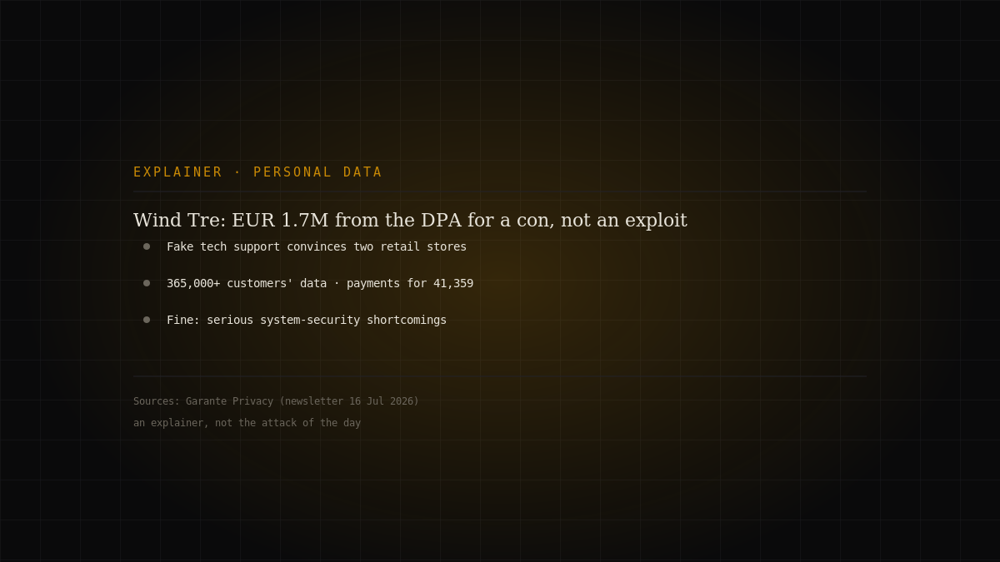
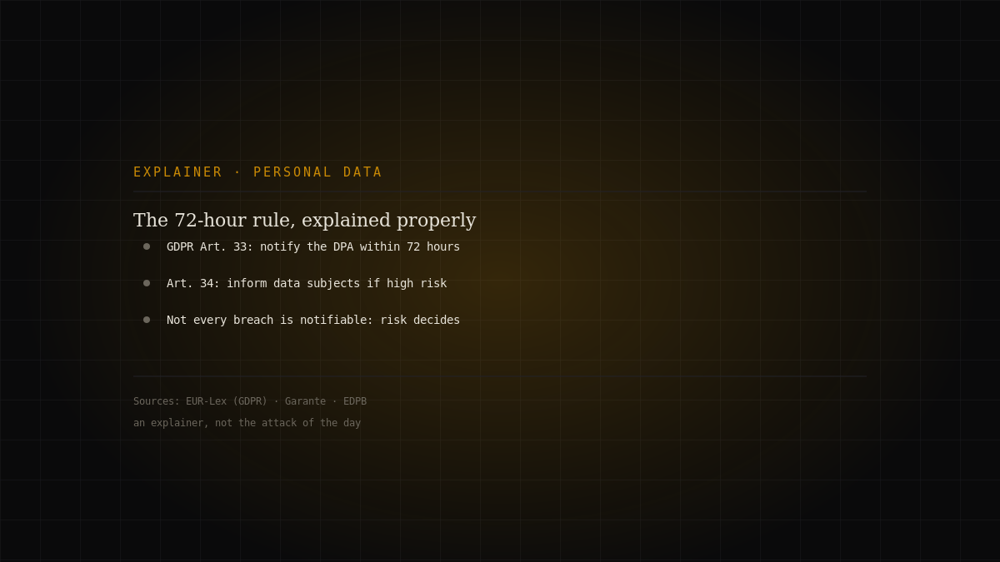
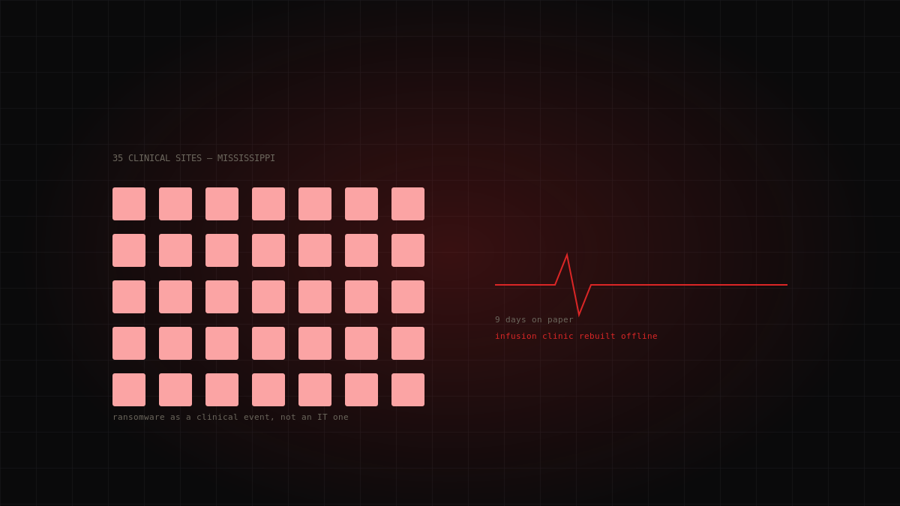

Topic · Compliance
Privacy and personal data
The GDPR, the authority that enforces it in Italy, and the principles that matter.

Dossiers in this section
3 dossiersWind Tre, €1.7M from the Italian DPA: when the flaw isn't an exploit but a clerk talked into it
Italy's data protection authority (the Garante) fined Wind Tre €1,715,600 for serious shortcomings in system security. According to the authority…
Editorial explainer · Italian DPA (Garante) decision · medium
Continue reading →
The 72-hour rule, explained properly: what the GDPR actually requires after a breach
"You have 72 hours to notify" is the line everyone repeats and few explain. This explainer lines up what the GDPR actually says: when the cl…
Editorial explainer · official sources · medium
Continue reading →
Medusa and UMMC: The Clinic That Learned to Run Offline
On 19 February 2026 Mississippi's largest health system went dark: 35 clinical sites shut, the state's only Level I trauma center paralysed.…
Medusa · critical
Continue reading →The topic in brief
The GDPR and who enforces it
The General Data Protection Regulation (EU) 2016/679 (GDPR), in force since 25 May 2018, governs the processing of personal data in the Union. In Italy the supervisory authority is the Garante per la protezione dei dati personali, an independent administrative authority responsible for monitoring application of the regulation under Article 51.
Principles, not just rules
The GDPR revolves around principles: lawfulness and transparency, data minimisation (collect only what's necessary), purpose limitation, accuracy, integrity and confidentiality. And it grants people rights: access, rectification, erasure, portability, objection. A personal-data breach must be notified to the authority, generally within 72 hours where a risk to people's rights is likely.
Security and privacy are the same thing
There's no data protection without data security. The appropriate technical and organisational measures the GDPR requires are the same cyber-hygiene practices this whole site talks about: encryption, access control, incident handling. A data breach is, almost always, first a security incident.
FAQ
- Who is the Garante per la protezione dei dati personali?
- Italy's independent authority that supervises GDPR application, under Article 51 of the regulation.
- Within what deadline must a data breach be notified?
- Generally within 72 hours of discovery, where the breach may pose a risk to people's rights and freedoms.